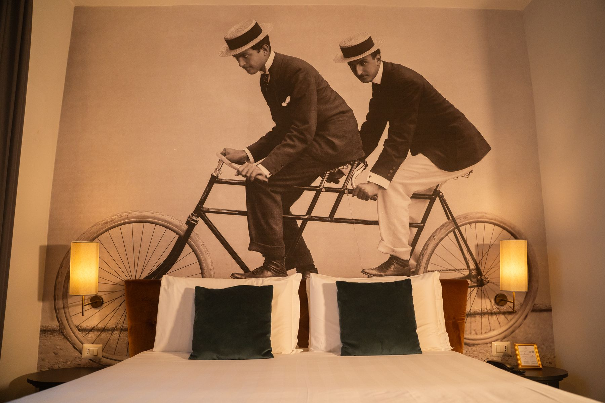
Nel 1852, in una Firenze ancora capitale della cultura, i fratelli Leopoldo, Giuseppe e Romualdo Alinari fondarono quello che sarebbe diventato il più antico laboratorio fotografico del mondo. Con le loro lastre immortalarono opere d'arte, monumenti e volti, inventando un modo nuovo di guardare — e di ricordare.
La camera a loro dedicata è un omaggio a quello sguardo. Toni caldi, finiture eleganti e superfici che catturano la luce come un obiettivo d'altri tempi compongono un ambiente raccolto ed elegante, pensato per chi ama il fascino discreto delle cose fatte bene.
Uno spazio dove ogni particolare sembra posato per essere fotografato, e dove la memoria dell'immagine diventa comfort contemporaneo.
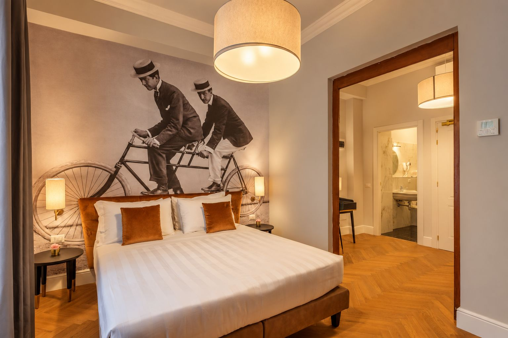
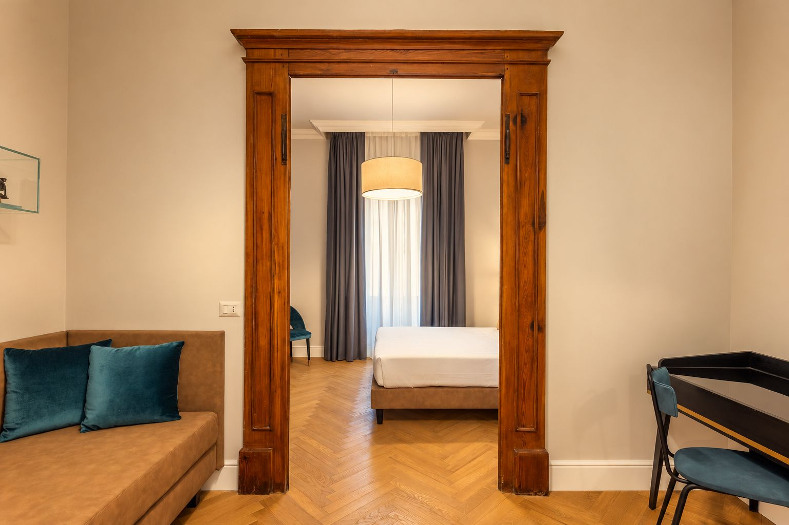
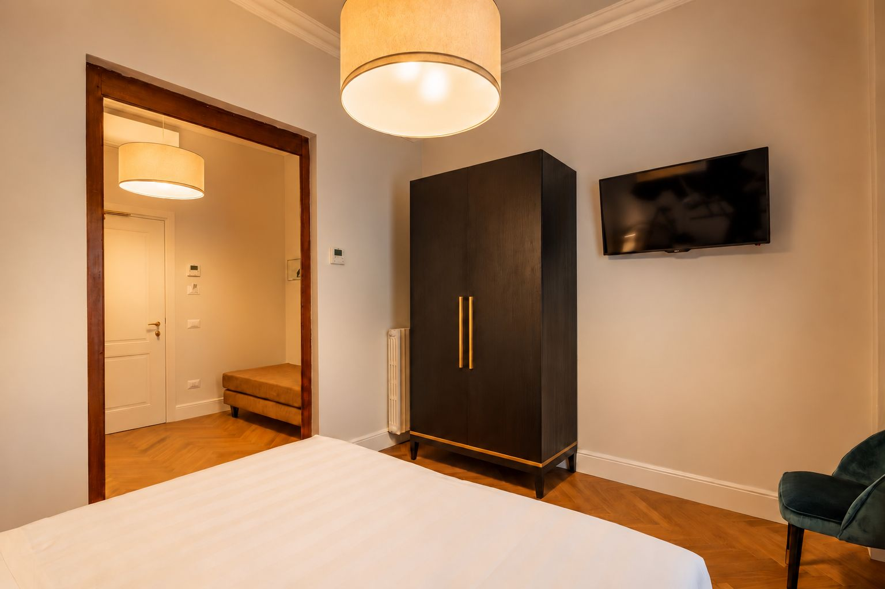
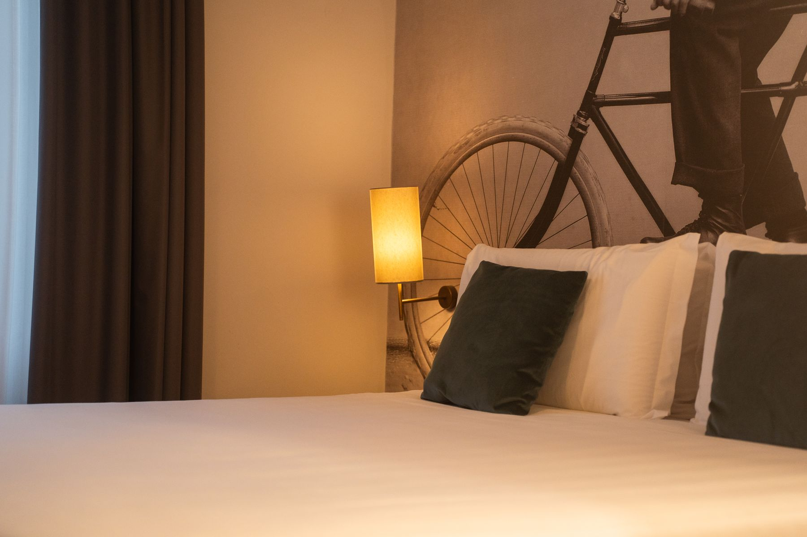
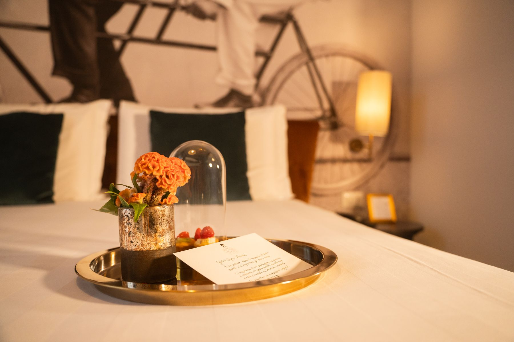
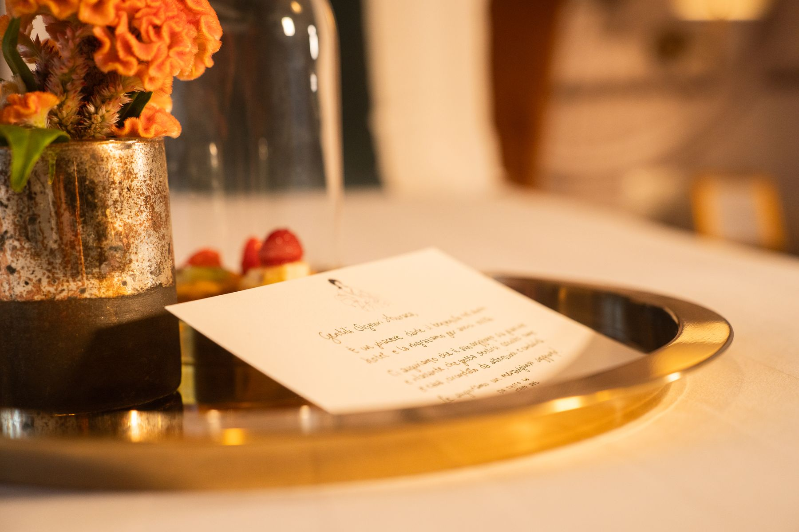
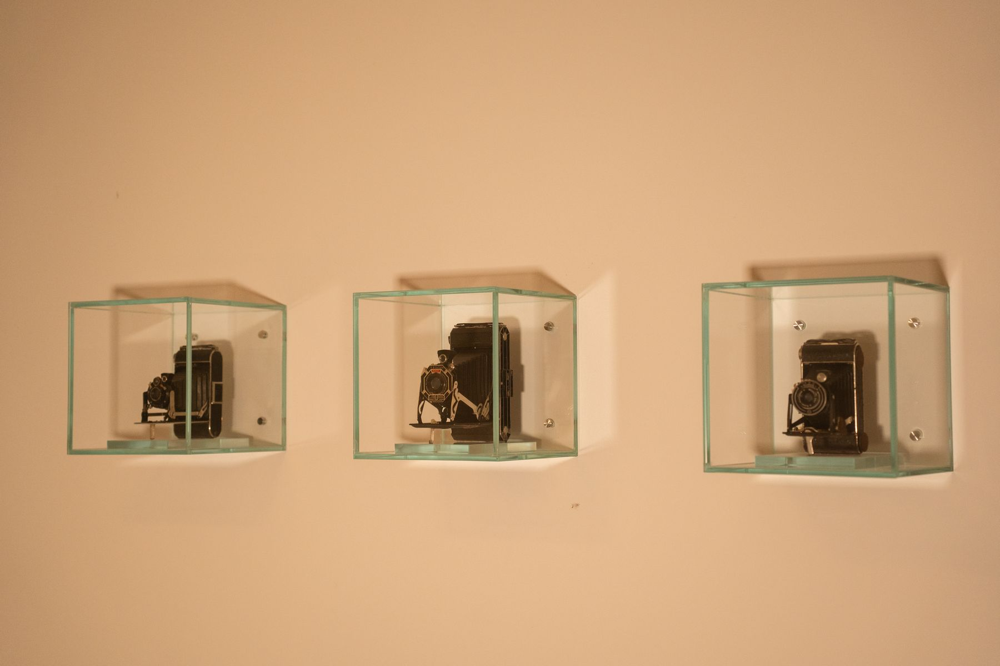
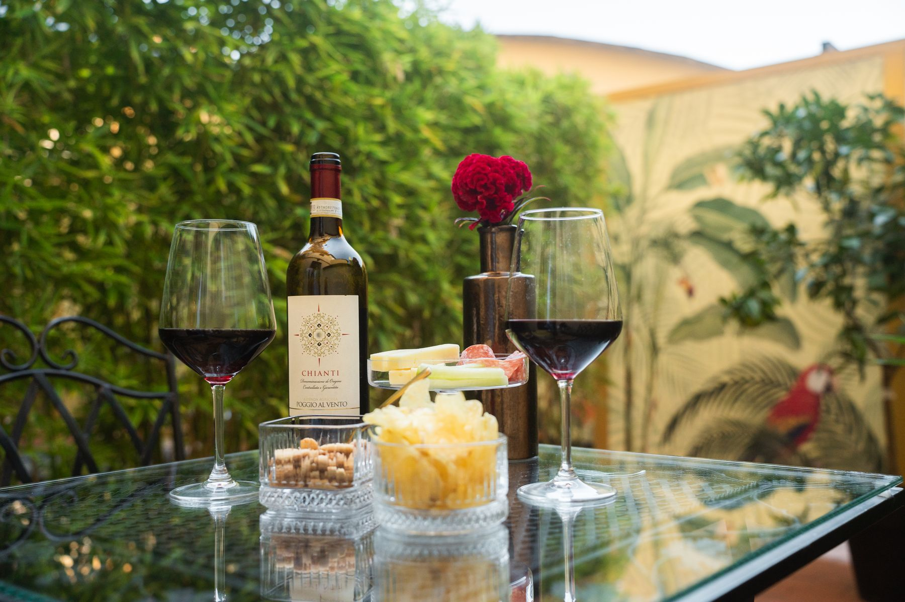
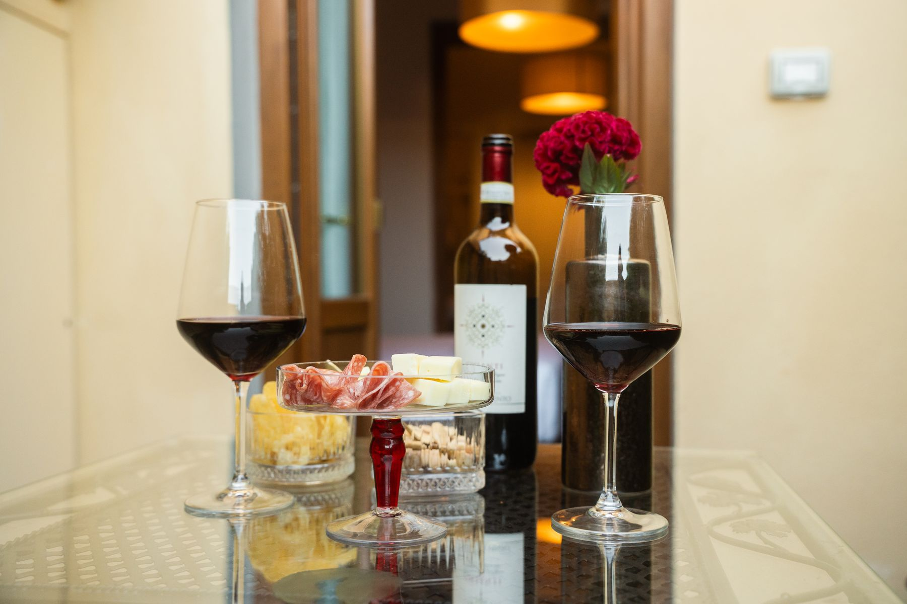
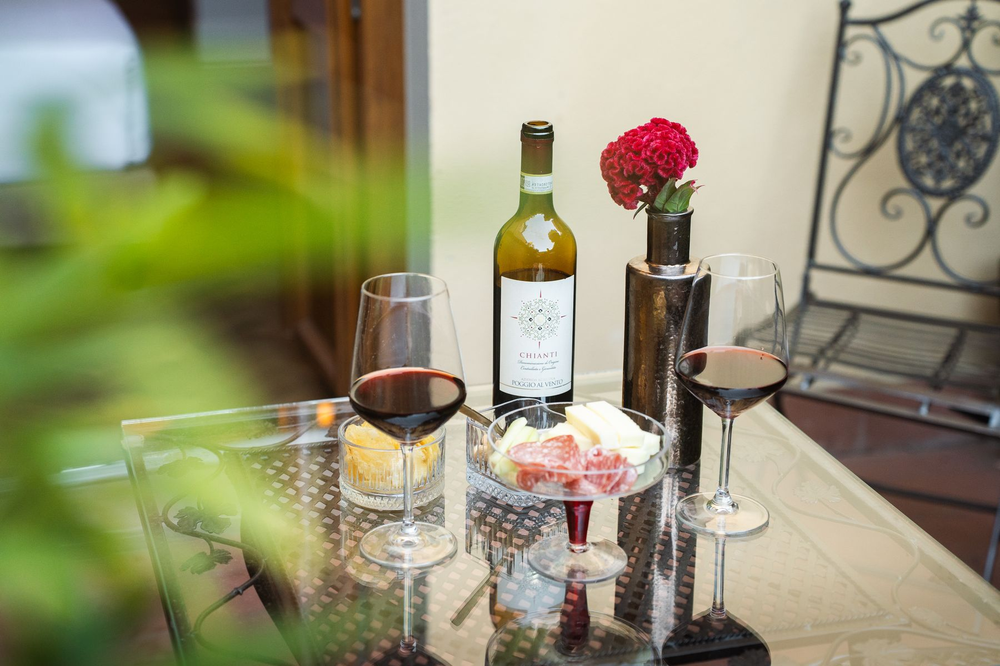